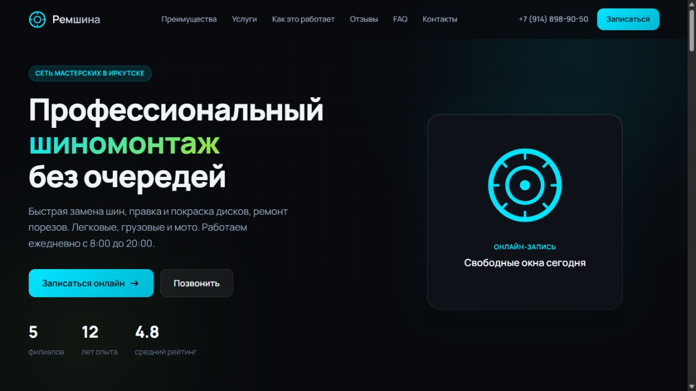
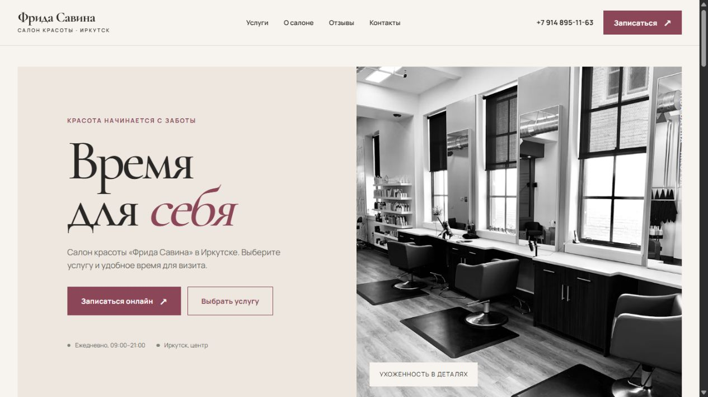
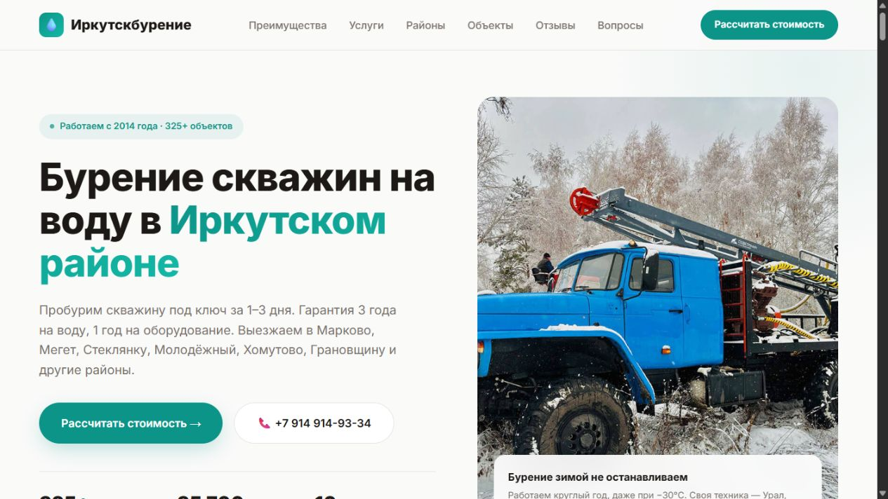
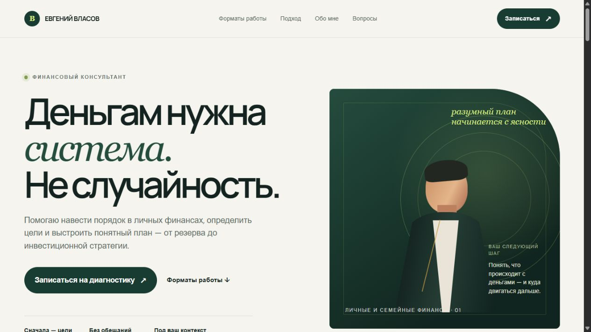
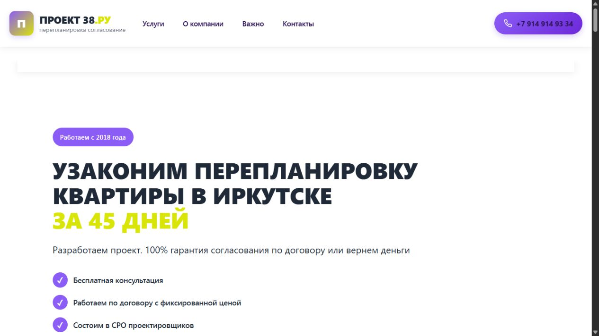
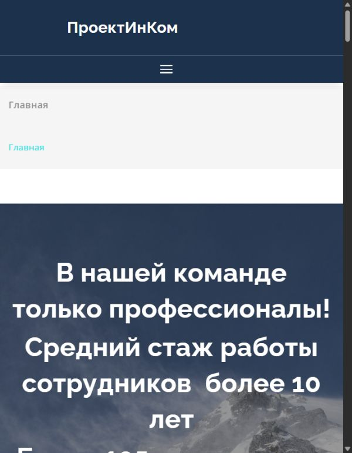

remshina38.albinartess.workers.dev

Ремшина
Сайт шиномонтажа: услуги, филиалы, ответы на вопросы и запись.
Здесь собрал свои работы: сайты услуг, личные страницы и проекты сообществ. Разные задачи и характеры — все ссылки в одном месте.
Обсудить твой сайт ↗
Сайт шиномонтажа: услуги, филиалы, ответы на вопросы и запись.

Сайт салона красоты с услугами, атмосферой салона и переходом к онлайн-записи.

Сайт бурения скважин: направления работы, объекты и расчёт стоимости.

Личная страница финансового консультанта: подход, форматы работы и запись на диагностику.

Проектирование, согласование и узаконивание перепланировок квартир в Иркутске.

Сайт проектной компании: направления проектирования, команда и контакты.
Моя наработка в направлении туристического клуба и партнёрского бизнеса.
Сейчас HTTPS-адрес недоступен. Превью появится после восстановления сайта.